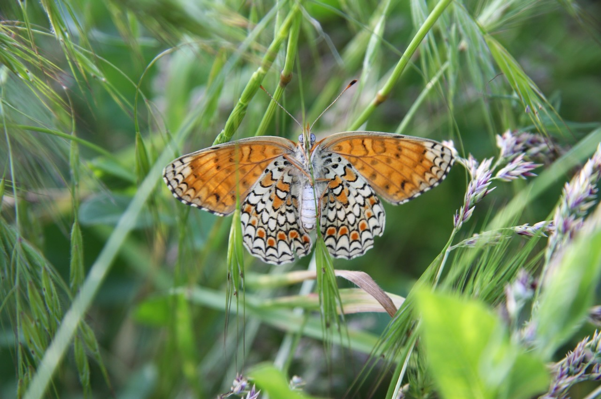
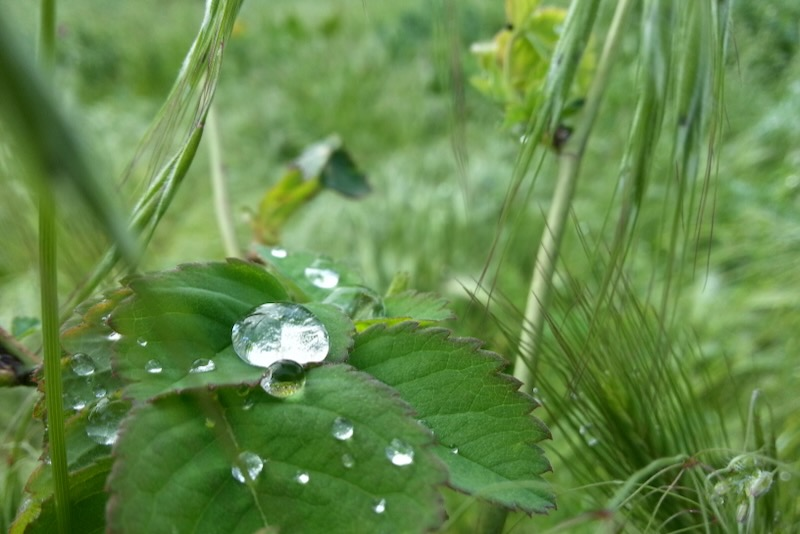
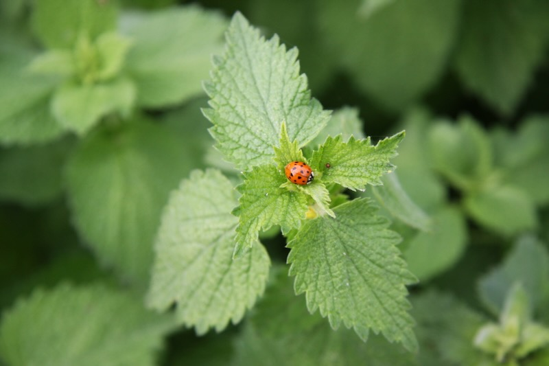

A meadow butterfly in the summer grass

Taken in my great-grandfather’s garden
I spent every summer there as a child, watching the small world of plants and insects, and nature with all its little wonders. It’s a pity a photograph can’t capture the scents and the feeling of that place.
View gallery About meMemories of childhood summers

As a child, I often went fishing on the estuary early in the morning. I loved watching the dew cover the blades of grass and slowly slide down them, gathering into one big drop.

Where I grew up, we called the ladybug “solnyshko” — little sun. It was in so many of my childhood cartoons. You could always let one land on your hand and watch it crawl from finger to finger.
To be continued...